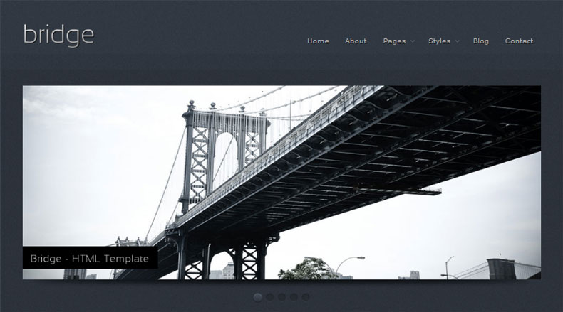
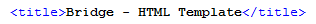
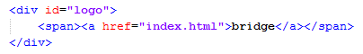
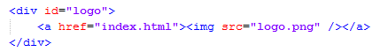
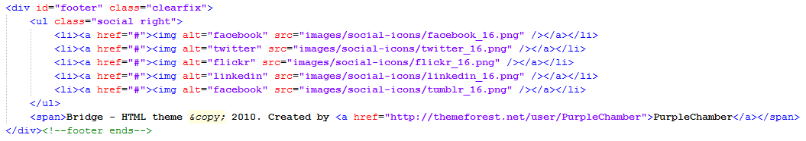
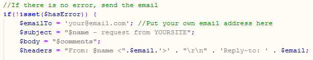
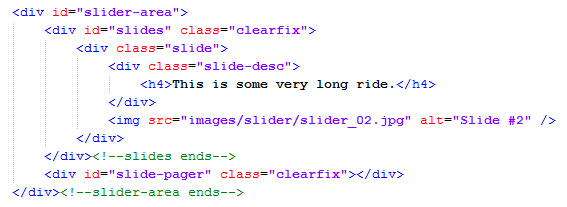
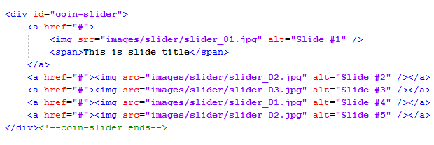
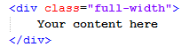
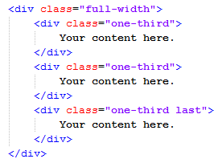

“Bridge” Documentation by “PurpleChamber” v1.0
“Bridge - HTML Template”
Thank you for purchasing Bridge theme suitable for portfolio, business or blog websites. If you have any questions that are beyond the scope of this help file, please feel free to email via my user page contact form here. Thanks so much!

Table of Contents
- What files are included with my theme?
- What steps do I need to take to make the site my own?
- How do I configure my contact form?
- Configuring image sliders.
- Use of columns.
- Explanation of some other classes..
- Sources & Credits.
A) What files are included with my theme? - top
Bridge is a HTML/CSS theme that comes with already layed out pages for you to work with. As well as HTML, and CSS though, there are several other file types such as javascript, and php. These are listed below, and briefly explained.
Html
- index.html - The homepage for displaying your featured / latest / best work, and some information about your services.
- index-2.html - Same as index.html, but uses a different image slider - Coin slider.
- about.html - A page showcasing some sample styling: sidebar widgets, text paragraphs with images floated on both sides, etc.
- blog.html - A blog page with sidebar on the right.
- blog-single.html - Single blog post page with comments and comment form.
- column-layouts.html - Showcases all possible column layouts.
- typography.html - This page shows basic typography, tables, forms, lists and other.
- portfolio-one-column.html - One column portfolio page with big images and sample buttons.
- portfolio-two-columns.html - Two column portfolio page with big images and sample buttons.
- portfolio-three-columns.html - Three column portfolio page.
- portfolio-four-columns.html - Four column image gallery.
- _blank.html - Blank template for quick starting your new page, contains basic site structure.
CSS
- reset.css - This resets browsers so they'll render different elements the same. You need not worry about this file
- style.css - This is the main style sheet, where all styles are defined except color information.
- colors.css - This is where all the colors used on template are defined.
- superfish.css - This CSS file styles navigation menu, its size, positioning and other.
- coin-slider-styles.css - This is Coins slider default style sheet.
Javascript
Please note : This theme uses jQuery, but pulls it from the google code library to improve load time.
- custom.js - This is where all plugins are initialized and their oprions set.
- jquery.easing.1.3.js - Plugin for smoother animation.
- hoverIntent.js - More clever way to detecting hover state.
- DD_belatedPNG_0.0.8a-min.js - PNG transparency fix for IE.
- cufon-yui.js - Cufon - lets to use custom fonts.
- Sansation_300.font.js - The font itself. Used on headings.
- superfish.js - Dropwdown navigation menu framework.
- supersubs.js - Dropdown menu plugin. Lets you have fixed size dropdown box.
- jquery.fancybox-1.3.1.js - Image/video popup plugin.
- jquery.mousewheel-3.0.2.pack.js - Lets you use mouse wheel to sroll through galleries (used with fancybox only).
- jquery.cycle.all.js - Default image slider.
- coin-slider.js - Coin slider - with facny effects.
PHP
- contact.php - This pulls all the information from the contact form and sends the email.
PSD
The theme comes with a PSD for slider buttons. I didn't design all the site in photoshop, because it is not so heavy on graphic elements.
Images
The theme also comes with several images, used for backgrounds, some icons etc.
B) What steps do I need to take to make the site my own? - top
As you may have noticed, any site on the internet has stuff such as the page title, the logo name, even possibly a favicon. These brief steps will allow you to personalise your site to your own company / you.
The page title
The page title is found within the head of each and every html file in this theme. To change it, you are going to have to edit the following line in every one of those html files.

As you can see it is likely you will want to change the title, and/or adding some additional info on the current page, so that visitors know where they currently are.
The site logo
You are bound to have noticed the big Bridge logo in the top left corner of every page, and will definately want to place your own logo in here.

Just like the page title, you will need to change the text within these logo tags on every html page you have. If on the other hand, you wish to impliment an image as a logo rather than text, you need to place an IMG tag to link to your logo image:

The footer text
By default, the footer comes with my name and site in the copyright. This doesnt have to be, and you are more than welcome to edit it to however you want. Like the above two changes, your going to need to make this edit in every html page you have.

Also you can choose wich social icons to use, link them, or use anything else you want.
Content
Most of the content is fairly self explanatory, using standrd html formatting. I can't teach you how to use these html elements, but looking around the html files will get you a long way by simply changing the default place setting text.
You only need to change one line of code - find the line $emailTo = 'your@mail.com'; and change the email address to yours. Be sure to leave the quotation marks. Thats it!, one line of code, and you can test it sending email to you.

Please Note : Make sure that you test it on web server. It won`t work from your computer.
D) Configuring image sliders. - top
jCycle slider (default)
As you can see below, "slider-area" must contain two divs: "slides" and "slide-pager". Inside "slides" you need to use a div called "slide" for every slide you want to be displayed. Inside "slide" there is a div with class "slide-desc" for slide description ant the actual image of size 960x360px. So basically you need to add or delete a block of code within div "slide" to add or delete slides accordingly.

Coin slider
Coin slider is a bit easier to use. Just list all the images inside the div "coin-slider". You can wrap them with link tags or add a description in span tag. Just see below for reference. Images are also of size of 960x360px, slide pager will be added automatically by the script.

E) Use of columns. - top
Full width
The use of full width content box is self explanatory, just see the image below.

One third
Every set of columns must be wrapped with div "full-width" and the last column must have a class "last" assigned.

More examples are shown on page column-layouts.html
F) Explanation of some other classes. - top
- img-border - Adds the border around the image as shown on the four column portfolio page.
- img-sha-xxx - Add a shadow below image. Bedind the x'es is the number of the width. See portfolio examples.
- left - Floats element to the left.
- right - Floats element to the right.
- fancybox - This class lets to popup image, must be applied to anchor tag (a).
- youtube - Lets popup youtube videos, also must be applied to anchor tag.
- vimeo - Lets popup vimeo videos.
- button - Anchor tag with this class appears as a button.
- read-more - As seen on index.html generates different type of link.
G) Sources & Credits. - top
- gcons by greepit - Beautiful open source icons used for the address list items.
- 32px mania iconset by DDrDark - Icons used on home page and about us page.
- Web Injection icon pack by Jonatan Castro Fernández - Icons used on home page and about us page.
- Coin slider by Ivan Lazarevic - Fancy image slider.
- jCycle by Mike Alsup - Simple but powerful image slider.
- Fancybox by FancyBox - FancyBox is a tool for displaying images, html content and multi-media in a Mac-style "lightbox" that floats overtop of web page.
- Sansation font by Bernd Montag - The font I used for headings.
- Superfish by Joel Birch - Superfish is an enhanced Suckerfish-style menu.
- hoverIntent by Brian Cherne - hoverIntent is a plug-in that attempts to determine the user's intent... like a crystal ball, only with mouse movement!
- jQuery easing plugin by GSGD - A jQuery plugin from GSGD to give advanced easing options.
Once again, thank you so much for purchasing this theme. As I said at the beginning, I'd be glad to help you if you have any questions relating to this theme. If you have a more general question relating to the themes on ThemeForest, you might consider visiting the forums and asking your question in the "Item Discussion" section.
-PurpleChamber
Go To Table of Contents